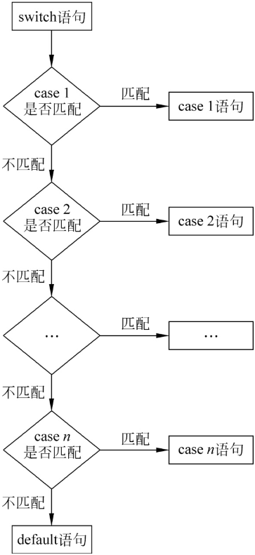

首页 > 编程笔记
JS switch case用法详解
在 JavaScript 条件语句中，像 if...else if...else 语句，如果有多个 else if 条件，则代码写起来就会十分烦琐，JavaScript 提供了一种用于多条件判断的语法结构：switch...case，它的执行过程与 if...else if...else 类似，如图1所示。
它的语法结构如下：
在 switch 后边的括号里编写表达式，然后紧跟一个大括号，大括号里面有多个 case 语句块和一个 default 语句块。
case 语句块是当 switch 表达式的值满足 case 指定的值时，则会执行这个 case 代码块中的代码。如果所有的 case 都不满足，则会执行 default 中的代码块。
下边的例子展示了 switch...case 的使用方法，代码如下：
这里变量 a 的值为10，那么在匹配 case 时，会从第1个 case 开始，使用 === 判断 case 的值是否和表达式的值相等。这里第2个 case 的值是 10，与 a 的值相等，所以执行了它里边的代码，打印出了 10。
需要注意的是，在每个 case 后边建议都写上一个 break 语句用于中断代码的执行，如果不写，则会从匹配到的 case 开始，顺序执行后边所有 case 及 default 中的代码。
例如删掉上边例子中所有的 break，则它的输出结果如下：
它的语法结构如下：
switch(表达式){
case 值1:
语句1
break;
case 值2:
语句2
break;
...
default:
语句3
break;
}

图1：switch...case 执行过程
图1：switch...case 执行过程
在 switch 后边的括号里编写表达式，然后紧跟一个大括号，大括号里面有多个 case 语句块和一个 default 语句块。
case 语句块是当 switch 表达式的值满足 case 指定的值时，则会执行这个 case 代码块中的代码。如果所有的 case 都不满足，则会执行 default 中的代码块。
下边的例子展示了 switch...case 的使用方法，代码如下：
let a= 10;
switch(a){
case 5:
console.log(＂5＂);
break;
case 10:
console.log(＂10＂);
break;
case 12:
console.log(＂12＂);
break;
default:
console.log(＂0＂);
break;
}
输出结果为＂10＂。这里变量 a 的值为10，那么在匹配 case 时，会从第1个 case 开始，使用 === 判断 case 的值是否和表达式的值相等。这里第2个 case 的值是 10，与 a 的值相等，所以执行了它里边的代码，打印出了 10。
需要注意的是，在每个 case 后边建议都写上一个 break 语句用于中断代码的执行，如果不写，则会从匹配到的 case 开始，顺序执行后边所有 case 及 default 中的代码。
例如删掉上边例子中所有的 break，则它的输出结果如下：
10
12
0
关注公众号「站长严长生」，在手机上阅读所有教程，随时随地都能学习。内含一款搜索神器，免费下载全网书籍和视频。

微信扫码关注公众号